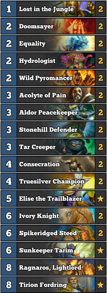

Mid Range Paladin
Overview
In the current meta if you cannot win by turn 6 then you better have a strong finisher cause your opponents quest is about to pop off.
Gameplay
This deck uses just good cards to out trade and value your opponent. The theory is that if you can use spikeridge steed on a card its value will carry you to the win. Great cards to use SpikeRidge steed on: Tirion, Acolyte of Pain, and Sunkeeper Tarim.
Matchups
I have not played this deck much but ideally you want to mulligan for a nice curve. Hydrologyst drops a 1 mana spell so use that to your advantige tocombo with wildpyromancer. Use doomsayer to kill early opponent tempo and then swing in with your buffed up minion.
